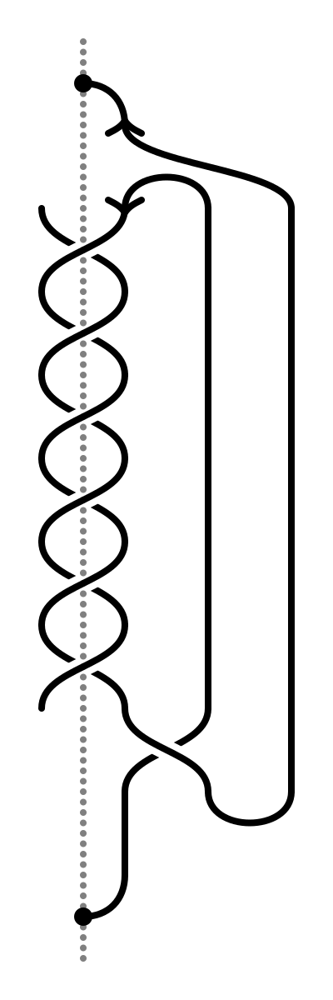

show all invariants|show all metadata
Input data and context

% s.l1.y0.y0.y0.y0.y0.y0.x1.u2
s.l1.y0.y0.y0.y0.y0.y0.x1.u2
,1
% Simplifies with options '-qs' to r0.x1.r1.x2.y1.y0.y0.y1.y1.y0.y0.y1.y1.y0.y0.y1.y1.y0.y0.y1.y1.y0.y0.y1.y1.y0.y0.x2.u1.y0.y0.x1.x0.y1.y1.y1.y1.y1.y1.y1.y1
Bar-Natan multicurve \(\mathrm{\widetilde{BN}}(T)\)
options -c2-qs
(diagram)
(metadata)
% file 'examples/words/w0cd4c45691/cxBNr-c2-qs', generated by kht++ 0.1 on Mon Nov 16 16:43:50 2026 UTC
1) h^0 q^36 δ^18 ⬮~~S~>⬯—>⬯~>⬯—>⬯~>⬮<—⬮~>⬯—>⬯~>⬯—>⬯~>⬮<—⬮~>⬯—>⬯~>⬯—>⬯~>⬮<—⬮~>⬯—>⬯~>⬯—>⬯~>⬮<—⬮~>⬯—>⬯~>⬯—>⬯~>⬮<—⬮~>⬯—>⬯~>⬯—>⬯~>⬮<—⬮
Khovanov multicurve \(\mathrm{\widetilde{Kh}}(T)\)
options -c2-qs
(diagram)
(metadata)
% file 'examples/words/w0cd4c45691/cxKhr-c2-qs', generated by kht++ 0.1 on Mon Nov 16 16:43:50 2026 UTC
1) h^23 q^71 δ^25/2 ⬮~~S^2~>⬮<— r(0) q^72 δ|^25/2
2) h^19 q^65 δ^27/2 ⬮~~S~>⬯—>⬯~>⬯—>⬯~>⬮—>⬮<~⬯<—⬯<~⬯<—⬯<~⬮<— s4(∞) q^70 δ_^13
3) h^15 q^59 δ^29/2 ⬮~~S~>⬯—>⬯~>⬯—>⬯~>⬮—>⬮<~⬯<—⬯<~⬯<—⬯<~⬮<— s4(∞) q^64 δ_^14
4) h^11 q^53 δ^31/2 ⬮~~S~>⬯—>⬯~>⬯—>⬯~>⬮—>⬮<~⬯<—⬯<~⬯<—⬯<~⬮<— s4(∞) q^58 δ_^15
5) h^ 7 q^47 δ^33/2 ⬮~~S~>⬯—>⬯~>⬯—>⬯~>⬮—>⬮<~⬯<—⬯<~⬯<—⬯<~⬮<— s4(∞) q^52 δ_^16
6) h^ 3 q^41 δ^35/2 ⬮~~S~>⬯—>⬯~>⬯—>⬯~>⬮—>⬮<~⬯<—⬯<~⬯<—⬯<~⬮<— s4(∞) q^46 δ_^17
7) h^-1 q^35 δ^37/2 ⬮~~S~>⬯—>⬯~>⬯—>⬯~>⬮—>⬮<~⬯<—⬯<~⬯<—⬯<~⬮<— s4(∞) q^40 δ_^18